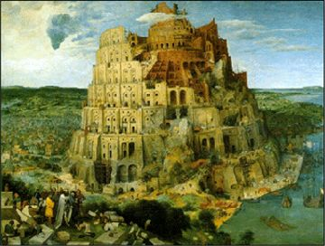

Online Proceedings (ENTCS)
Online Proceedings (ENTCS)
| BABEL '01
First workshop on multi-language infrastructure and interoperability. Firenze, Italy. 8th September 2001. Part of PLI 2001. |
 |
Aims and Scope
Recent years have seen a resurgence of interest in multi-language tools and intermediate languages, and in interoperability between programs and components written in different programming languages. Shared infrastructure such as code generators, analysis tools and garbage collectors can greatly ease the task of producing a high-quality implementation of a new programming language, whilst being able to interoperate easily with code written in existing languages is essential for such an implementation to be useful in practice.
This workshop aims to bring together researchers and developers working on multi-language integration. Contributions are welcome on topics including, but not limited to:
Submissions may address any programming paradigm. Experience papers which describe the use of multiple languages in application development are also welcome. Authors unsure of the appropriateness of a potential submission should mail the PC chair.
Call for Papers
Invited Speakers
Programme Committee
Submission
Papers should be at most 14 pages and should be submitted in Ghostscript-compatible PostScript or PDF format and be printable on both US letter and A4 paper. Authors are strongly encouraged to use ENTCS style files. Submissions should not overlap significantly with work which has already been published or submitted to any other conference or journal.
Submissions should arrive by 1st June, 2001. Papers should be submitted electronically via the BABEL'01 Submission Site (closed).
Authors will be notified of acceptance or rejection by 9th July, 2001 and final versions of accepted papers will be due by 10th August, 2001. An informal proceedings will be published as a technical report and distributed at the workshop. It is intended that a final proceedings will be published in a volume of ENTCS.
Those Important Dates Again
| Deadline for submissions | 1st June 2001 |
| Notification of acceptance | 9th July 2001 |
| Final versions due | 10th August 2001 |
| BABEL workshop | 8th September 2001 |